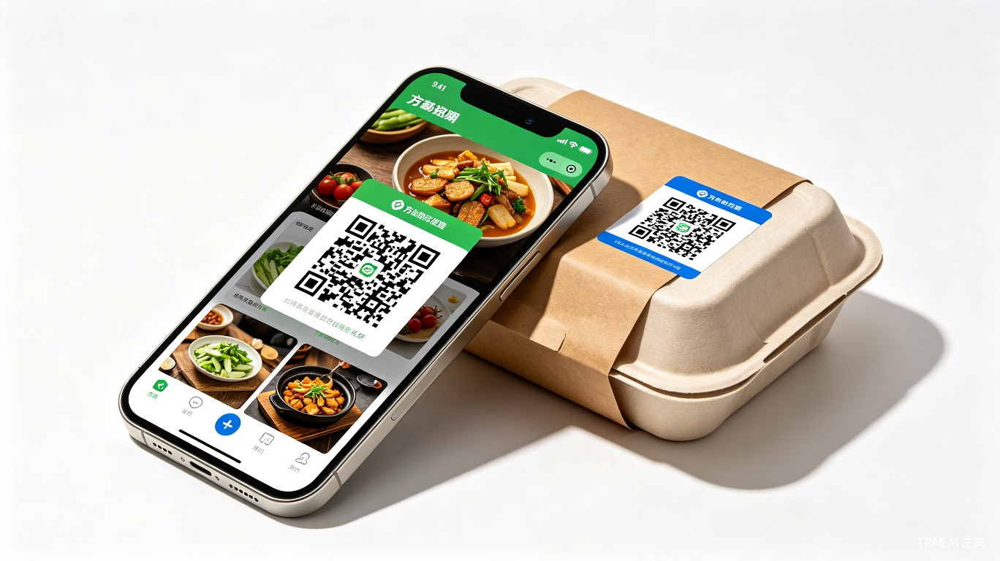
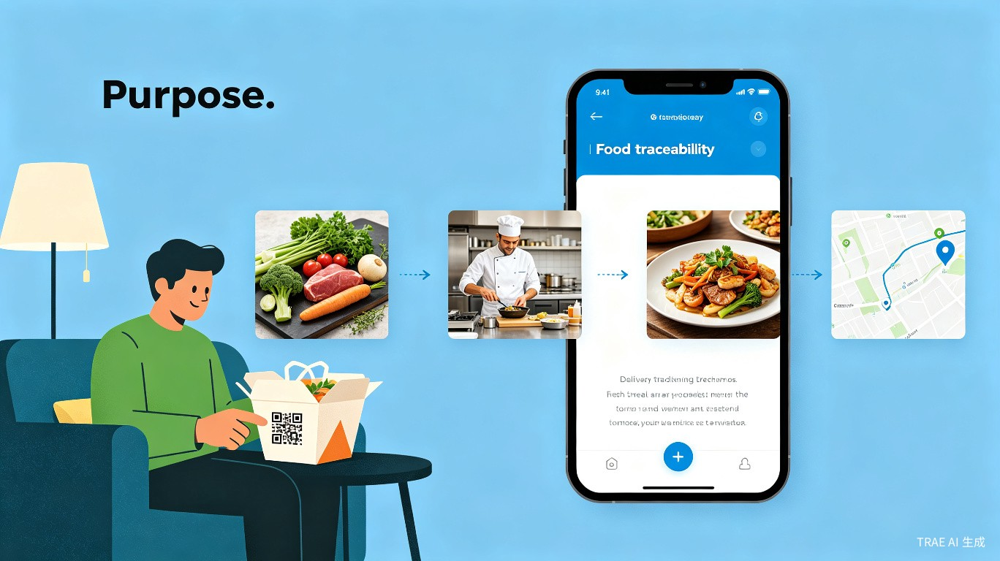

外卖食品健康可追溯系统

灵感来源：每次点外卖都像"开盲盒"——不知道后厨干不干净、食材新不新鲜。如果能像快递一样随时查看"物流信息"，让消费者亲眼看到菜品从原料到成品的全过程，就能真正吃得放心。
产品形态："放心吃"是一套外卖食品安全追溯系统，核心是在外卖包装和订单页面生成专属二维码，扫码即可查看菜品的原料照片、加工过程照片、成品照片，让每一份外卖都透明可追溯。
商家在备餐时为每道菜品拍摄原料照片、加工过程照片、成品照片，系统自动关联订单。
出餐时在包装封口贴上专属二维码贴纸，消费者收到后扫码即可查看该订单的完整溯源信息。
外卖平台订单详情页内嵌"放心吃"入口，点击即可查看菜品照片和加工过程，无需额外扫码。
消费者扫描外卖包装上的二维码，即可查看食材来源、加工过程、配送轨迹等全链路信息。
基于溯源数据、用户评价、监管记录等多维度生成商家食品安全信用评分。
对问题食材、违规操作实时预警，联动监管部门快速响应，防患于未然。

备餐时为每道菜拍原料、加工、成品三张照片
系统生成订单专属二维码，打印贴于包装封口
收到外卖后扫码或从订单页查看照片溯源
亲眼看到食材和加工过程，吃得安心放心
场景一：小李在办公室点了一份黄焖鸡米饭，收到外卖后发现包装封口贴着一个"放心吃"二维码。扫码后，他看到了这道菜用的鸡肉、土豆、青椒的原料照片，看到了厨师在整洁的厨房里烹饪的过程照片，还有成品出锅的照片。小李心想："这下真的可以放心吃了！"
场景二：某连锁餐厅接入"放心吃"系统后，每道菜都拍照留痕，后厨卫生状况一目了然。消费者通过订单页面就能查看菜品制作过程，信任度大幅提升，店铺评分从 4.2 涨到 4.8，订单量增长了 35%。
"放心吃"系统直击民生痛点，通过技术手段提升食品安全治理水平。预计可帮助数千万消费者获得更安全的饮食保障，推动餐饮行业向透明化、标准化方向发展，助力构建食品安全社会共治格局。
采用 SaaS 订阅+增值服务的商业模式：向商家收取系统使用费，向平台提供数据接口服务，向消费者提供高级健康分析会员服务。预计三年内可覆盖10万+餐饮商家，年营收规模达数千万元。
传统食品安全监管依赖人工巡检，平均需要 3-5 天才能完成一次全面检查。"放心吃"通过 IoT 设备和 AI 监控实现7×24小时实时监测，问题发现时间从数天缩短至分钟级，监管效率提升 100 倍以上。
"放心吃"不仅是一个溯源工具，更是构建食品信任生态的基础设施。未来我们将：
与美团、饿了么等主流外卖平台深度对接，实现一键查询。
基于用户健康数据，智能推荐个性化健康餐食。
与医疗机构合作，为慢性病患者提供饮食干预方案。